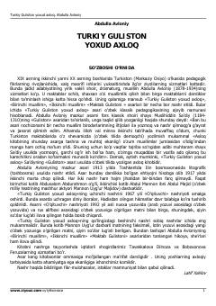

TGYoshlar tarbiyasi va axloqiy fazilatlar haqidagi klassik ma'rifiy asar.
Ushbu asar o'zbek klassik pedagogikasining yorqin namunasi bo'lib, insonni yaxshilikka chorlash va yomon xulqlardan qaytarishga qaratilgan. Abdulla Avloniy mazkur kitobda Sa'diy Sheroziyning «Guliston» asari uslubidan ilhomlanib, yoshlar tarbiyasi va axloqiy fazilatlar haqida qimmatli nasihatlarni bayon etadi.